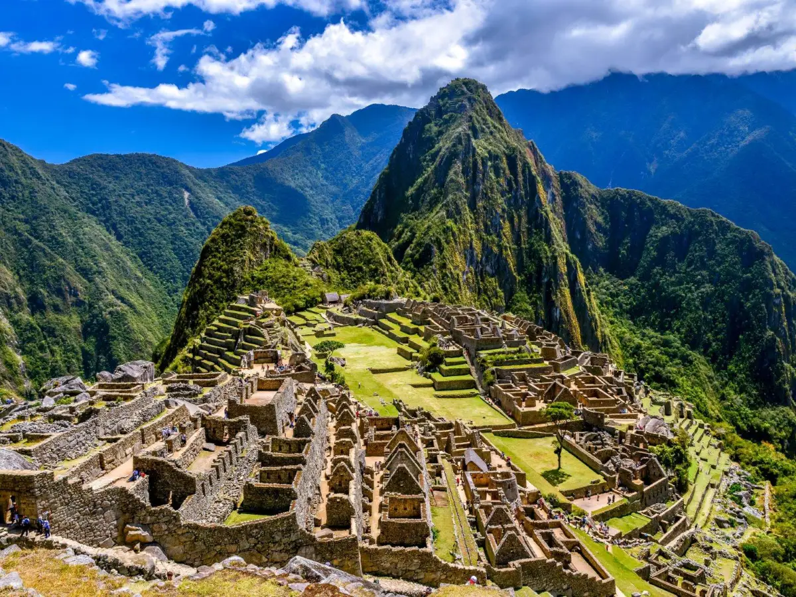

Machu Picchu
Machu Picchu é uma antiga cidade inca localizada no alto dos Andes peruanos, a cerca de 2.430 metros acima do nível do mar. Construída no século XV durante o reinado do imperador Pachacútec, a cidade foi abandonada poucos anos depois, durante a conquista espanhola, e permaneceu praticamente desconhecida pelo mundo ocidental até 1911, quando o explorador Hiram Bingham a redescobriu.
Informações Gerais
| Característica | Detalhes |
|---|---|
| Localização | Cusco, Peru |
| Altitude | 2.430 metros acima do nível do mar |
| Construção | Por volta de 1450 d.C. |
| Civilização | Império Inca |
| Redescoberta | 1911 por Hiram Bingham |
| Patrimônio Mundial UNESCO | Desde 1983 |
| Status | Maravilha do Mundo Moderno (desde 2007) |
Curiosidades
- Machu Picchu significa "Montanha Velha" em quéchua, língua dos incas.
- A cidade possui mais de 150 edificações, incluindo templos, santuários e residências.
- As pedras foram encaixadas sem o uso de argamassa — a técnica é tão precisa que nem uma folha de papel cabe entre as juntas.
- O sítio foi construído de forma a resistir a terremotos, pois as pedras "dançam" e retornam ao lugar.
- Acredita-se que tenha sido uma residência real ou local de retiro religioso inca.
- Recebe anualmente cerca de 1,5 milhão de turistas.
Imagens
